Tysiące zadowolonych klientów w całej Europie. Oto wybrane opinie osób, które stosują nasze produkty.
Wiadomość klientaPrzetłumaczone z języka słowackiego
„Dzień dobry! Chcę podzielić się efektami stosowania Balsamu Bolotova.
Balsam Bolotova stosowałam przez 2 miesiące i zgodnie z Państwa zaleceniem zrobiłam 1 miesiąc przerwy.
Obawiałam się, że w tym czasie będę miała problemy z trawieniem, ale tak się nie stało.
Co prawda pewne dolegliwości się pojawiły, ale trwały krótko i były znacznie słabsze. Teraz po przerwie znowu będę stosować Balsam Bolotova.
Polecam”

RobertWhatsAppPrzetłumaczone z języka czeskiego
„Wasz balzam kupiłem ze względu na trawienie, trawienie mi się poprawiło i zmniejszyły się wzdęcia, czuję się bardzo dobrze, smak jak dla mnie jest idealny, a przede wszystkim pomaga. Balzam mogę tylko polecić!!!!”

JiříPrzetłumaczone z języka czeskiego
„Dzień dobry.
Bardzo chciałbym podziękować za szybką realizację i dostawę. A za Państwa eliksir, który bardzo mi pomógł — od razu po kilku zastosowaniach poczułem się lepiej i czuję się coraz lepiej. Dlatego zamawiam kolejny eliksir również dla żony. Dziękuję bardzo i pozdrawiam, Jiří.”
KarelWhatsAppPrzetłumaczone z języka czeskiego
„Balzam stosuję przy obiedzie, na pewno poprawiło się trawienie, po jedzeniu nie mam tak wzdętego brzucha i ogólnie czuję się lepiej, nie mam tak dużych wahań zmęczenia – energia jest stabilniejsza 👌”

ZdenaWhatsAppPrzetłumaczone z języka czeskiego
„Dzień dobry,
Balzam mi pomógł, oczywiście przy zmienionej diecie. Czuję się dobrze i mam nadzieję, że to się na jakiś czas utrzyma!!!!
Mogę gorąco polecić.
Kolejnego na razie nie potrzebuję. Jeśli tak, zamówię.
Dziękuję za zainteresowanie.
Miłego dnia.
Zdena”
Wiadomość klientaWhatsAppPrzetłumaczone z języka słowackiego
„Dzień dobry! Chcę Wam podziękować za Wasz produkt Balzam Bołotowa. Poprawiło mi się trawienie i ruszył mi metabolizm. Czuję się świetnie. Dziękuję.”

AlešWhatsAppPrzetłumaczone z języka słowackiego
„Dzień dobry. Balzam bardzo mi pomógł. Teraz mogę zjeść wszystko, na co mam ochotę. Obecnie stosuję raz dziennie profilaktycznie. Jestem maksymalnie zadowolony. Będę zamawiał znowu. Pozdrawiam, Aleš.”

Wiadomość klientaWhatsAppPrzetłumaczone z języka czeskiego
„Dzień dobry, wiem, muszę sprawdzić zapasy i na pewno znowu zamówię, nie wyobrażam już sobie życia bez Waszego balzamu
Bardzo pomaga mi na trawienie, piję go po każdym posiłku 👍👍👍”

Wiadomość klientaWhatsAppPrzetłumaczone z języka czeskiego
„Dzień dobry, Olegu, właśnie planuję zamówić Balzam. Jestem bardzo zadowolona. Zawsze biorę więcej sztuk. Proszę powiedzieć, jaki rabat dostanę przy zamówieniu 4 szt. (6 szt.)?”

Wiadomość klientaWhatsAppPrzetłumaczone z języka czeskiego
„Bardzo dziękuję za ofertę, ale balzam wciąż jeszcze mam. Kiedy będzie mi się kończył, kupię znowu. Jest wspaniały.👍”
RadkaWhatsAppPrzetłumaczone z języka czeskiego
„Po stosowaniu nie jestem tak zmęczona”
JiřinaWhatsAppPrzetłumaczone z języka czeskiego
„Na pewno czuję się lepiej. Jem tylko trzy razy dziennie i staram się za bardzo nie łączyć potraw.”
Wiadomość klientaWhatsAppPrzetłumaczone z języka czeskiego
„Działa. Naprawdę dobry”
Wiadomość klientaWhatsAppPrzetłumaczone z języka czeskiego
„Ten balzam zaczęłam stosować kilka dni temu, po przerwie po pierwszym. Dopiero po przeczytaniu poradnika dowiedziałam się, że dawkę się zwiększa – pierwszy przez cały czas stosowałam po łyżeczce. Jestem z niego zadowolona.”

Wiadomość klientaWhatsAppPrzetłumaczone z języka słowackiego
„Dzień dobry, balzam stosuję 3 razy dziennie, trawienie się poprawiło, jestem zachwycona, bardzo dziękuję Bołotowa”
Wiadomość klientaWhatsAppPrzetłumaczone z języka czeskiego
„Zamówiłem 2 szt., a 1 jeszcze mam, poza tym super 👍”
Wiadomość klientaWhatsAppPrzetłumaczone z języka czeskiego
„Tak, zamówiłem i stosowałem, to dobry produkt i korzystam z Waszych różnych porad 👍”
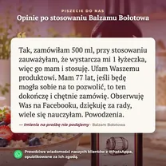
Wiadomość klientaWhatsAppPrzetłumaczone z języka słowackiego
„Tak, zamówiłam 500 ml, przy stosowaniu zauważyłam, że wystarcza mi 1 łyżeczka, więc go mam i stosuję. Ufam Waszemu produktowi. Mam 77 lat, jeśli będę mogła sobie na to pozwolić, to ten dokończę i chętnie zamówię. Obserwuję Was na Facebooku, dziękuję za rady, wiele się nauczyłam. Powodzenia.”
AnnaWhatsAppPrzetłumaczone z języka czeskiego
„Jestem z balzamu bardzo zadowolona, bardzo dziękuję.”
Wiadomość klientaWhatsAppPrzetłumaczone z języka czeskiego
„Dzień dobry, Olegu, poprawiło mi się trawienie i wypróżnianie. Stosuję 1–2 razy dziennie łyżeczkę w wodzie i piję przez słomkę.”
Wiadomość klientaWhatsAppPrzetłumaczone z języka czeskiego
„Dzień dobry, balzam stosuję już od dłuższego czasu, mam już 3. butelkę i super”

Wiadomość klientaWhatsAppPrzetłumaczone z języka czeskiego
„Podstawowa obserwacja: preparat stosuje żona, przyspieszone trawienie, nigdy rano nie jadła śniadania, teraz budzi się głodna i czuje potrzebę zjedzenia śniadania.”
Wiadomość klientaWhatsAppPrzetłumaczone z języka czeskiego
„Tak, jestem zadowolona i w przyszłości znowu będę zamawiać, ale jeszcze mam, dziękuję 🖐🏽👍”
Wiadomość klientaWhatsAppPrzetłumaczone z języka czeskiego
„Na razie balzam mam, stosuję, jestem zadowolona”
Wiadomość klientaWhatsAppPrzetłumaczone z języka słowackiego
„Dziękuję, na razie jestem zadowolona z balzamu. Działanie powoli się pojawia, przynosi ulgę.👍🏻👋🏻”
Wiadomość klientaWhatsAppPrzetłumaczone z języka słowackiego
„Jestem zadowolona, skończyłam jedną butelkę. Dziękuję”
Wiadomość klientaWhatsAppPrzetłumaczone z języka czeskiego
„Jest lepiej, mam jeszcze zapasy, dziękuję”

Wiadomości klientówPrzetłumaczone z języka czeskiego i słowackiego
„Dzień dobry.
Ponownie utwierdziłam się w przekonaniu, jak Państwo piszą, że Balzam Bolotova jest dla mnie niezbędny.
Wielkie dzięki.🌞”
„Już brałam balzam Bolotova i po roku trawienie zaczęło mi działać, więc to jest niesamowite”
„Działa💋mam to sprawdzone”
— Helena

Wiadomości klientówPrzetłumaczone z języka czeskiego i słowackiego
„Balzam Bolotova stosuję regularnie od ponad pół roku i muszę potwierdzić jego znakomite działanie. 👍 👍 👍 😊 😊 😊”
„Bardzo dziękuję, te informacje mi wystarczyły, jestem Wam bardzo wdzięczna, że robicie coś takiego dla nas i to za darmo, zwłaszcza dla nas, emerytów, dziękuję, życzę Wam wspaniałego życia, a przede wszystkim dużo zdrowia. Dobranoc ❤️❤️❤️❤️🥰🥰🥰🥰🍀🍀🍀🥰”
„Dzień dobry,... jestem wdzięczna i zachwycona Państwa życzliwym i wyjątkowym podejściem.
Pokornie Państwu dziękuję!
To dla mnie zaszczyt być Państwa klientką.
Z głębokim szacunkiem myślę o Państwu”
— Katarína
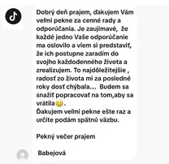
Wiadomość klientaPrzetłumaczone z języka słowackiego
„Dzień dobry, bardzo dziękuję za cenne rady i zalecenia. To ciekawe, że każde Państwa zalecenie do mnie przemówiło i wyobrażam sobie, że stopniowo włączę je do swojego codziennego życia i wprowadzę w czyn. Tego najważniejszego, radości życia, przez ostatnie lata dość mi brakowało.... Będę się starać popracować nad tym, żeby wróciła🙂.
Jeszcze raz bardzo dziękuję i na pewno dam znać, jak mi idzie.
Miłego wieczoru”
Wiadomości klientówPrzetłumaczone z języka słowackiego
„Dziękuję, krem jest super”
„Dostałam, dlatego piszę, że jest super, zamówiłam jeszcze jeden 😀”
Wiadomości klientówPrzetłumaczone z języka czeskiego i słowackiego
„Po długim czasie odkryłem kogoś, kto w sprawach zdrowia zajmuje się najpierw PRZYCZYNĄ, a dopiero potem SKUTKIEM... Dzięki za informacje... przekazuję dalej 👍😁 Petr 🍷”
— Petr
„Dziękuję, bardzo chętnie Was oglądam i dziękuję za rady, podane szybko, zwięźle, trafnie. A że są dobre, wiem, jestem lekarką holistyczną.”
„Zamówiłam balzam. Dobrze pomaga, jestem zadowolona.”
Wiadomości klientówPrzetłumaczone z języka czeskiego i słowackiegoSkrócono — pełna treść na obrazku
„Dziękuję za szczegółowe informacje. Balsam używam już od jesieni i zauważyłam poprawę w trawieniu... bardzo dziękuję🥰”
„Balsam kupiłam przed tygodniem. … Jestem znacznie spokojniejsza, zaczyna być lepiej. … Będę dalej stosować Wasz produkt. Dziękuję i życzę miłego dnia.”
„Dzień dobry. Balsam używam już około 2 tygodni. Muszę powiedzieć, że mój układ trawienny wrócił do 100%.
Milan”
— Milan
Wiadomości klientówPrzetłumaczone z języka słowackiegoSkrócono — pełna treść na obrazku
„Dzień dobry! Dziękuję za świetny, bardzo dobrze wykonany produkt. Doskonale nadaje się do spożycia i włączania do codziennej diety. Na początku listopada złożę kolejne zamówienie i będę kontynuować stosowanie. Gratuluję – to naprawdę super produkt. Dziękuję, że jesteście. Pozdrawiam serdecznie, Valéria”
— Valéria
„Dzień dobry, Balsam Bołotowa to świetny produkt. Stosuję go od rana, w godzinach popołudniowych, a także wieczorem, tak jak zalecił producent. Doskonale wspiera moje trawienie. … Z całego serca polecam go innym. Niech służy także Wam. Życzę miłego dnia.”
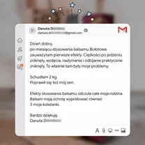
DanutaPrzetłumaczone z języka czeskiegoSkrócono — pełna treść na obrazku
„Dzień dobry, po miesiącu stosowania balsamu Bołotowa zauważyłam pierwsze efekty. … Poprawił się też mój sen. Efekty stosowania balsamu odczuła cała moja rodzina. Balsam mają ochotę wypróbować również 3 moje koleżanki. Bardzo dziękuję. Danuta”
Wiadomości klientówPrzetłumaczone z języka słowackiegoSkrócono — pełna treść na obrazku
„Mogę potwierdzić, że Balsam jest świetny. … Polecam pić Balsam — pomoże.”
„Dzień dobry. … BARDZO PAŃSTWU DZIĘKUJĘ. … Życzę Państwu wielu dalszych sukcesów. 👍🙋♀️”
Wiadomości klientówPrzetłumaczone z języka czeskiego i słowackiegoSkrócono — pełna treść na obrazku
„… Teraz czuję się bardzo dobrze 💯👍❤️”
„… Dziękuję za Państwa opiekę 😃👍”
„Dzień dobry! Chcę się podzielić efektami stosowania Balsamu Bolotova. Jak na razie największą korzyścią jest przyspieszona perystaltyka, a w efekcie bardziej regularne wypróżnianie.”
Wiadomości klientówPrzetłumaczone z języka czeskiegoSkrócono — pełna treść na obrazku
„Dzień dobry! Chciałbym podzielić się moimi efektami po stosowaniu balsamu Bołotowa”
„To dokładnie miesiąc odkąd zaczęłam używać Państwa Balsamu. … Zamówiłam już u Państwa kolejne trzy opakowania i będę nadal stosować balsam. Dziękuję!”
PerlaPrzetłumaczone z języka słowackiegoSkrócono — pełna treść na obrazku
„Dzień dobry, panie Olegu. Jestem wdzięczna, że Balsam Bolotova istnieje. … Mój żołądek znowu dobrze pracuje, mimo że jem też takie produkty, które wcześniej musiałam wykluczyć ze swojej diety. Pozdrawiam, Perla”
Wiadomości klientówPrzetłumaczone z języka czeskiegoSkrócono — pełna treść na obrazku
„… Po balsamie jest o wiele lepiej. …”
„Z balsamu korzystam już od Was, trawienie znacznie się poprawiło, dlatego będę go nadal stosować 🥰
Życzę Wam miłego wieczoru!”
Wiadomość klientaPrzetłumaczone z języka słowackiegoSkrócono — pełna treść na obrazku
„Ok, chcę Wam bardzo serdecznie podziękować. Używam balsamu od około tygodnia. … Będę stosować go dalej, bo jest naprawdę wspaniały. Jeszcze raz ogromnie dziękuję.”
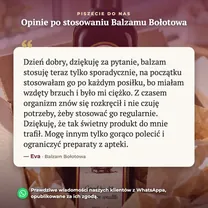
EvaWhatsAppPrzetłumaczone z języka czeskiegoSkrócono — pełna treść na obrazku
„… Z czasem organizm znów się rozkręcił i nie czuję potrzeby, żeby stosować go regularnie. Dziękuję, że tak świetny produkt do mnie trafił. …”
Wiadomość klientaWhatsAppPrzetłumaczone z języka słowackiegoSkrócono — pełna treść na obrazku
„… Balzam Bołotowa gorąco polecam, zamówiłam go znowu, a także kolagen Bołotowa, dziękuję”
Wiadomość klientaWhatsAppPrzetłumaczone z języka słowackiegoSkrócono — pełna treść na obrazku
„… Trawienie poprawiło mi się na tyle, że obecnie go nie stosuję, ale jestem wdzięczna za jego działanie.”
Wiadomość klientaWhatsAppPrzetłumaczone z języka czeskiegoSkrócono — pełna treść na obrazku
„… Na pewno zamówię u Was balzam ponownie.”
VikyWhatsAppPrzetłumaczone z języka słowackiegoSkrócono — pełna treść na obrazku
„Dzień dobry, Panie Olegu, … Ogólnie czuję, że lepiej się poruszam, jestem zadowolona. Zdjęcie wyślę na koniec stosowania eliksiru. Dziękuję. …”
Wiadomość klientaWhatsAppPrzetłumaczone z języka słowackiegoSkrócono — pełna treść na obrazku
„Wasz balzam mi pomógł, trawienie się unormowało i dlatego gorąco polecam go …”
KvětaWhatsAppPrzetłumaczone z języka czeskiegoSkrócono — pełna treść na obrazku
„Dzień dobry, balzam stosuję drugi miesiąc... czuję się świetnie, … jestem teraz w sanatorium, mam odlaną buteleczkę balzamu i biorę go do śniadania, do obiadu i do kolacji, do tego słomka... będę go brać jeszcze w listopadzie... w grudniu przerwa, a potem znowu”
AnnaWhatsAppPrzetłumaczone z języka słowackiegoSkrócono — pełna treść na obrazku
„Stosuję go od niedzieli zeszłego tygodnia, myślę, że te produkty są bardzo dobre, i kiedy przyjadę w grudniu, to skontaktuję się z Wami i zamówię dla siebie i dla męża. … Serdeczne dzięki”
Wiadomość klientaWhatsAppPrzetłumaczone z języka słowackiegoSkrócono — pełna treść na obrazku
„… Poprawił mi się sen, a rano także wypróżnianie. Kiedy skończę butelkę, napiszę do Was. Dziękuję za pomoc.”
Wiadomość klientaWhatsAppPrzetłumaczone z języka słowackiegoSkrócono — pełna treść na obrazku
„Czuję się dużo lepiej, staram się też przestrzegać diety według rozpiski, którą dostałam, … dziękuję Wam.”
MilaWhatsAppPrzetłumaczone z języka słowackiegoSkrócono — pełna treść na obrazku
„… Uważam, że to dla mnie wspaniała pomoc. Serdeczne dzięki także za książkę, ucieszyłam się, i życzę Wam pięknego dnia.”
Wiadomości klientówPrzetłumaczone z języka słowackiegoSkrócono — pełna treść na obrazku
„Bardzo dziękuję, już go stosuję i proszę, żeby Państwo przysłali mi drugą butelkę Balzamu Bolotova. Jestem z niego bardzo zadowolona. … Naprawdę jest znakomity. Dziękuję.”
„Dzień dobry. Mam Państwa balzam, stosuję go właśnie teraz. I jestem zadowolona. Zaczęłam go stosować 3.10. … Chciałabym kupić jeszcze.”
JiřinaPrzetłumaczone z języka czeskiegoSkrócono — pełna treść na obrazku
„Dzień dobry, panie Olegu. … Właśnie zużyłam mniej więcej jedną trzecią drugiej butelki Balzamu. … Czytam na YouTube wszystkie Pana rady i bardzo za nie dziękuję. Balzam Bolotova będę stosować długo, z zalecanymi przerwami, i bardzo się cieszę, że dowiedziałam się o nim we wrześniu. Panu osobiście, panie Olegu, życzę dużo zdrowia oraz sukcesów osobistych i zawodowych. Jiřina, Hranice na Moravě”
Wiadomości klientówPrzetłumaczone z języka słowackiegoSkrócono — pełna treść na obrazku
„Kupiłem balzam Bolotova. Stosuję go 3 tygodnie i już zacząłem czuć różnicę. … Dziękuję za radę”
— Robert
„Balzam Bolotova biorę już rok i jestem zadowolony”
„Dziękuję za informację, balzam Bolotova zamówiłam ponownie w zeszłym tygodniu.
Jestem z niego bardzo zadowolona,
pomaga mi. Oglądam Państwa filmy, są pożyteczne.
Dziękuję.”
TatianaPrzetłumaczone z języka słowackiegoSkrócono — pełna treść na obrazku
„… Całe dwa tygodnie odżywiam się według Państwa zaleceń, odstawiłam chleb, bułki, ryż, ziemniaki i inne węglowodany i obserwuję kolejne zmiany, które nastąpią.”
Wiadomości klientówPrzetłumaczone z języka czeskiego i słowackiegoSkrócono — pełna treść na obrazku
„Pozdrawiam z Czech, dziękuję za świetne zalecenia. Eliksir Bolotova stosuję od około dwóch miesięcy i mogę stwierdzić, że poprawiło mi się trawienie i ogólnie praca układu pokarmowego. Gorąco polecam eliksir👍👍👍”
„Stosuję to od około trzech tygodni i muszę powiedzieć, że super. … Polecam”
— Jana
„Biorę już miesiąc … poprawiło się trawienie i czuję się o 10 lat młodszy, biorę dalej.”
— Milan
„Balzam Bolotova stosuję regularnie od ponad pół roku i muszę potwierdzić jego znakomite działanie. 👍 👍 👍 😊 😊 😊”
Wiadomość klientaPrzetłumaczone z języka słowackiegoSkrócono — pełna treść na obrazku
„Dzień dobry🌻 dziś napisał mi kurier, że jutro powinien przywieźć mi balzam❤️ już bardzo się cieszę... Wiecie, nie mam jakichś poważniejszych problemów zdrowotnych, ale dużo przeczytałam o balzamie Bolotova, a pan Bołotow to wspaniały człowiek i naukowiec 🌹 i tak mogę powiedzieć, że po mniej więcej miesiącu stosowania mi pomógł, … ale wierzę, że pomogło mi to pod każdym względem🍀 ..a jeszcze tak 2 razy w tygodniu smaruję skórę roztworem 1 do 10 i jest napięta i ma ładny blask😎 na pewno będę kontynuować stosowanie, teraz zrobię sobie około 3 tygodni przerwy, a potem znowu będę stosować.. chcę to stosować długo, czy zawsze po miesiącu muszę zrobić miesiąc przerwy? życzę Wam pięknego dnia🌻”
Wiadomości klientówPrzetłumaczone z języka czeskiego i słowackiegoSkrócono — pełna treść na obrazku
„Tak, zamówiłam 3 butelki, stosuję go już 3 miesiące i mogę polecić każdemu, kto ma problem z trawieniem, wzdęciami, moje życie zmieniło się o 80 procent na lepsze, … jestem z Waszego balzamu bardzo zadowolona, stosuję 3 razy dziennie”
„Dzień dobry, czuję się lepiej, lżej, może i lepsza energia, bardzo Wam dziękuję, mam już kilka Waszych produktów, jestem bardzo zadowolona także z kremu do twarzy i z kolagenu, który stosuję od 10 dni i myślę, że skóra się poprawia, zamówiłam jeszcze Tocosh, dziękuję 🥰🌺”
Wiadomości klientówPrzetłumaczone z języka czeskiegoSkrócono — pełna treść na obrazku
„Już stosuję i jestem zadowolona. …”
„Dziękuję. Mam balzam i jest świetny”
„Piję już Bolotova i jestem bardzo zadowolona”
Wiadomości klientówPrzetłumaczone z języka czeskiego i słowackiegoSkrócono — pełna treść na obrazku
„Dzień dobry! Chcę się podzielić efektami stosowania Balzamu Bolotova. …”
„Dziękuję, już go stosuję i dałam go spróbować też koleżankom, jest znakomity i one też go chwaliły. Serdecznie dziękuję. Życzę miłego dnia.”
BoženaPrzetłumaczone z języka słowackiegoSkrócono — pełna treść na obrazku
„… Testuję. Efekty są widoczne i odczuwalne. Gorąco polecam. Dziękuję, że jesteście.❤️🙏”
Wiadomości klientówPrzetłumaczone z języka słowackiegoSkrócono — pełna treść na obrazku
„Bardzo dziękuję, stosuję go już 10 dni i mogę potwierdzić, że od razu od pierwszego dnia czułam, jak fantastycznie działa w organizmie. I za każdym razem, gdy go wypiję, to zauważam. Kiedy mi się skończy, na pewno zamówię go jeszcze. Wszystko, co podajecie, to prawdziwe fakty. Dziękuję, że jesteście. Niech się Wam nadal wiedzie. Pozdrawiam.”
„Dzień dobry, chcę Wam serdecznie podziękować. Zamówiłam Balzam Bolotova. … DZIĘKUJĘĘĘĘĘĘ. A żeby całkiem dojść do siebie, chciałam zapytać, czy ten balzam pomoże mi też na trawienie. I chętnie pobrałabym jadłospis. Jak mogę go pobrać? Jeszcze raz za wszystko dziękuję i życzę pięknego i udanego dnia.”
MarkétaPrzetłumaczone z języka czeskiegoSkrócono — pełna treść na obrazku
„Jest tak, jak Państwo piszą, bardzo mi pomógł. … Balzam poleciła mi moja znajoma, nic o nim nie wiedziałam, ale po drugim zastosowaniu poczułam się lepiej i dlatego obecnie stosuję go dalej, aż do zużycia jednego opakowania, i jestem bardzo zadowolona. Dzięki za niego”
Wiadomości klientówPrzetłumaczone z języka słowackiegoSkrócono — pełna treść na obrazku
„… Wtedy zamówiłam u Państwa balzam i bardzo mi pomaga, chwała Bogu. A teraz trzeba było brać go dalej. Bardzo Państwu dziękuję.”
— Maria
„Biorę łyżeczkę do wody po jedzeniu.....🥰”
Opinie po stosowaniu Balzamu Bolotova — wiadomości naszych klientów z Czech i Słowacji, przetłumaczone na język polski i opublikowane za ich zgodą.

Wiadomości klientówPrzetłumaczone z języka czeskiego
„Po stosowaniu nie jestem tak zmęczona”
— Radka
„Na pewno czuję się lepiej. Jem tylko trzy razy dziennie i staram się za bardzo nie łączyć potraw.”
— Jiřina
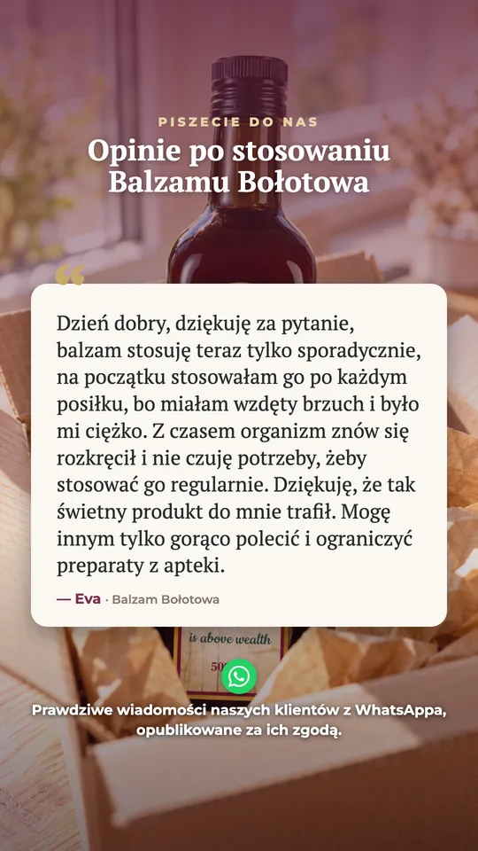
EvaPrzetłumaczone z języka czeskiegoSkrócono — pełna treść na obrazku
„… Z czasem organizm znów się rozkręcił i nie czuję potrzeby, żeby stosować go regularnie. Dziękuję, że tak świetny produkt do mnie trafił. …”

Wiadomości klientówPrzetłumaczone z języka czeskiego
„Działa. Naprawdę dobry”
„Ten balzam zaczęłam stosować kilka dni temu, po przerwie po pierwszym. Dopiero po przeczytaniu poradnika dowiedziałam się, że dawkę się zwiększa – pierwszy przez cały czas stosowałam po łyżeczce. Jestem z niego zadowolona.”
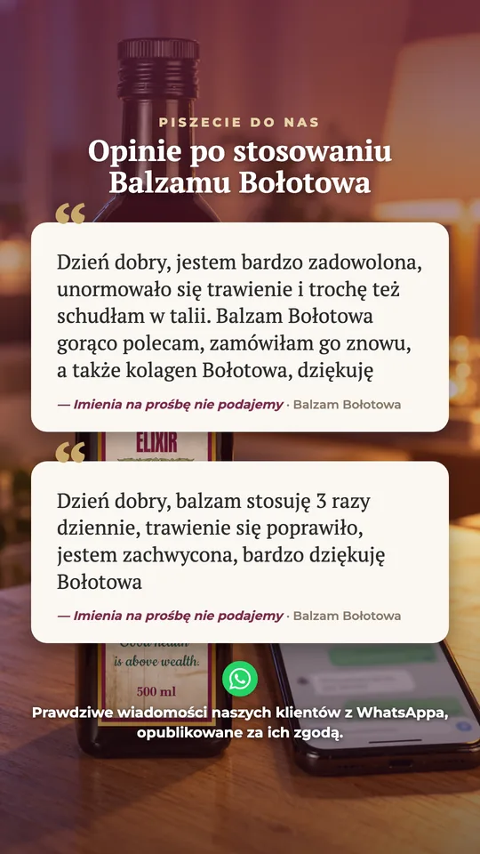
Wiadomości klientówPrzetłumaczone z języka słowackiegoSkrócono — pełna treść na obrazku
„… Balzam Bołotowa gorąco polecam, zamówiłam go znowu, a także kolagen Bołotowa, dziękuję”
„Dzień dobry, balzam stosuję 3 razy dziennie, trawienie się poprawiło, jestem zachwycona, bardzo dziękuję Bołotowa”

Wiadomość klientaPrzetłumaczone z języka słowackiegoSkrócono — pełna treść na obrazku
„… Trawienie poprawiło mi się na tyle, że obecnie go nie stosuję, ale jestem wdzięczna za jego działanie.”

Wiadomości klientówPrzetłumaczone z języka czeskiegoSkrócono — pełna treść na obrazku
„… Na pewno zamówię u Was balzam ponownie.”
„Zamówiłem 2 szt., a 1 jeszcze mam, poza tym super 👍”

Wiadomości klientówPrzetłumaczone z języka czeskiego
„Dzień dobry, wiem, muszę sprawdzić zapasy i na pewno znowu zamówię, nie wyobrażam już sobie życia bez Waszego balzamu
Bardzo pomaga mi na trawienie, piję go po każdym posiłku 👍👍👍”
„Tak, zamówiłem i stosowałem, to dobry produkt i korzystam z Waszych różnych porad 👍”

Wiadomość klientaPrzetłumaczone z języka słowackiego
„Tak, zamówiłam 500 ml, przy stosowaniu zauważyłam, że wystarcza mi 1 łyżeczka, więc go mam i stosuję. Ufam Waszemu produktowi. Mam 77 lat, jeśli będę mogła sobie na to pozwolić, to ten dokończę i chętnie zamówię. Obserwuję Was na Facebooku, dziękuję za rady, wiele się nauczyłam. Powodzenia.”

VikyPrzetłumaczone z języka słowackiegoSkrócono — pełna treść na obrazku
„Dzień dobry, Panie Olegu, … Ogólnie czuję, że lepiej się poruszam, jestem zadowolona. Zdjęcie wyślę na koniec stosowania eliksiru. Dziękuję. …”

Wiadomość klientaPrzetłumaczone z języka słowackiegoSkrócono — pełna treść na obrazku
„Wasz balzam mi pomógł, trawienie się unormowało i dlatego gorąco polecam go …”

Wiadomość klientaPrzetłumaczone z języka czeskiego
„Dzień dobry, Olegu, właśnie planuję zamówić Balzam. Jestem bardzo zadowolona. Zawsze biorę więcej sztuk. Proszę powiedzieć, jaki rabat dostanę przy zamówieniu 4 szt. (6 szt.)?”

Wiadomości klientówPrzetłumaczone z języka czeskiego
„Wasz balzam kupiłem ze względu na trawienie, trawienie mi się poprawiło i zmniejszyły się wzdęcia, czuję się bardzo dobrze, smak jak dla mnie jest idealny, a przede wszystkim pomaga. Balzam mogę tylko polecić!!!!”
— Robert
„Jestem z balzamu bardzo zadowolona, bardzo dziękuję.”
— Anna
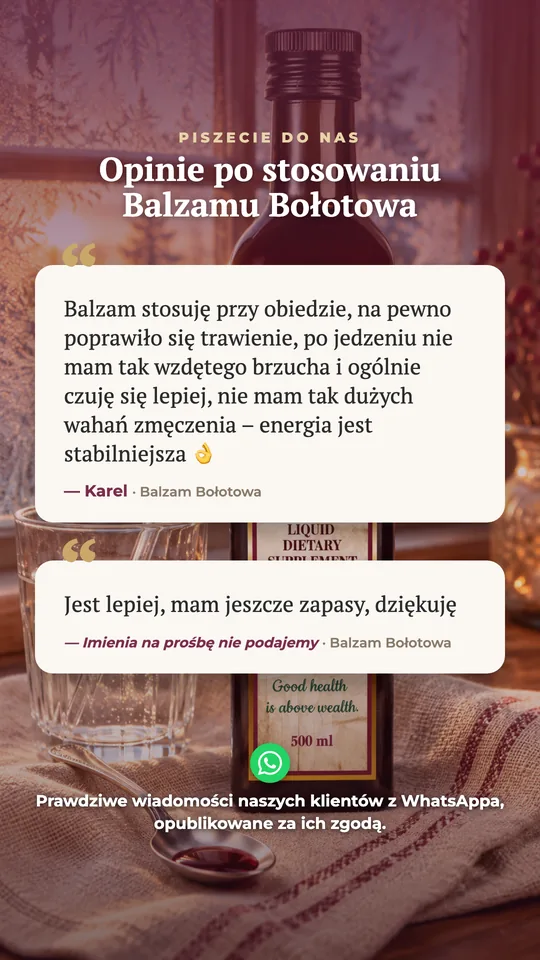
Wiadomości klientówPrzetłumaczone z języka czeskiego
„Balzam stosuję przy obiedzie, na pewno poprawiło się trawienie, po jedzeniu nie mam tak wzdętego brzucha i ogólnie czuję się lepiej, nie mam tak dużych wahań zmęczenia – energia jest stabilniejsza 👌”
— Karel
„Jest lepiej, mam jeszcze zapasy, dziękuję”

KvětaPrzetłumaczone z języka czeskiegoSkrócono — pełna treść na obrazku
„Dzień dobry, balzam stosuję drugi miesiąc... czuję się świetnie, … jestem teraz w sanatorium, mam odlaną buteleczkę balzamu i biorę go do śniadania, do obiadu i do kolacji, do tego słomka... będę go brać jeszcze w listopadzie... w grudniu przerwa, a potem znowu”
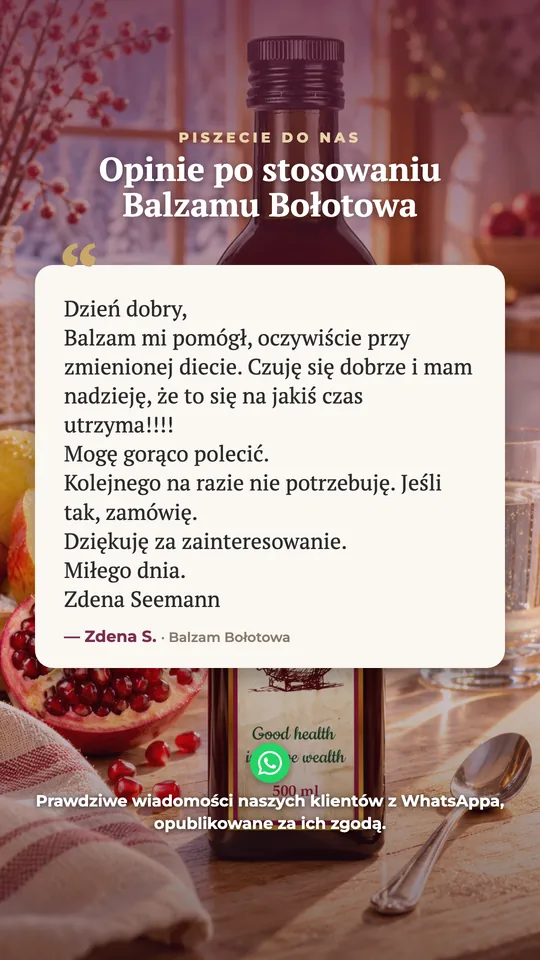
ZdenaPrzetłumaczone z języka czeskiego
„Dzień dobry,
Balzam mi pomógł, oczywiście przy zmienionej diecie. Czuję się dobrze i mam nadzieję, że to się na jakiś czas utrzyma!!!!
Mogę gorąco polecić.
Kolejnego na razie nie potrzebuję. Jeśli tak, zamówię.
Dziękuję za zainteresowanie.
Miłego dnia.
Zdena”

Wiadomości klientówPrzetłumaczone z języka czeskiego
„Dzień dobry, Olegu, poprawiło mi się trawienie i wypróżnianie. Stosuję 1–2 razy dziennie łyżeczkę w wodzie i piję przez słomkę.”
„Dzień dobry, balzam stosuję już od dłuższego czasu, mam już 3. butelkę i super”
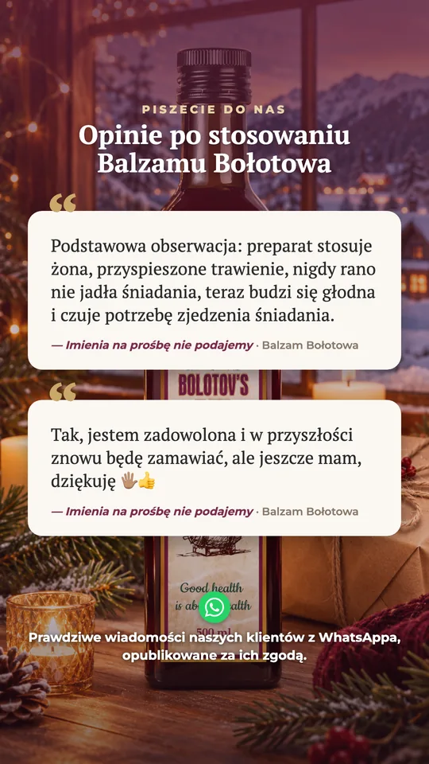
Wiadomości klientówPrzetłumaczone z języka czeskiego
„Podstawowa obserwacja: preparat stosuje żona, przyspieszone trawienie, nigdy rano nie jadła śniadania, teraz budzi się głodna i czuje potrzebę zjedzenia śniadania.”
„Tak, jestem zadowolona i w przyszłości znowu będę zamawiać, ale jeszcze mam, dziękuję 🖐🏽👍”

Wiadomości klientówPrzetłumaczone z języka czeskiego
„Bardzo dziękuję za ofertę, ale balzam wciąż jeszcze mam. Kiedy będzie mi się kończył, kupię znowu. Jest wspaniały.👍”
„Na razie balzam mam, stosuję, jestem zadowolona”
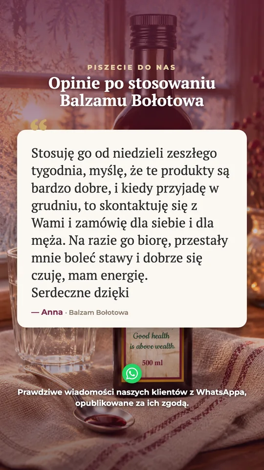
AnnaPrzetłumaczone z języka słowackiegoSkrócono — pełna treść na obrazku
„Stosuję go od niedzieli zeszłego tygodnia, myślę, że te produkty są bardzo dobre, i kiedy przyjadę w grudniu, to skontaktuję się z Wami i zamówię dla siebie i dla męża. … Serdeczne dzięki”
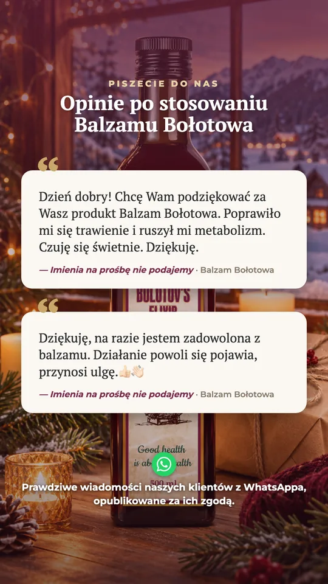
Wiadomości klientówPrzetłumaczone z języka słowackiego
„Dzień dobry! Chcę Wam podziękować za Wasz produkt Balzam Bołotowa. Poprawiło mi się trawienie i ruszył mi metabolizm. Czuję się świetnie. Dziękuję.”
„Dziękuję, na razie jestem zadowolona z balzamu. Działanie powoli się pojawia, przynosi ulgę.👍🏻👋🏻”
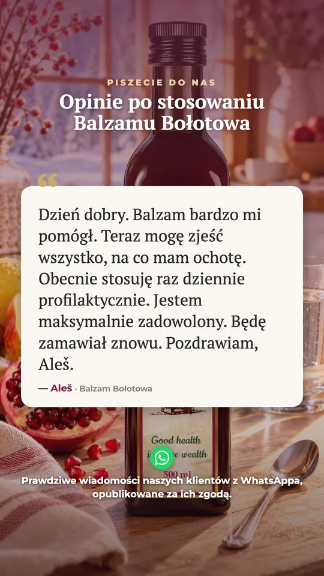
AlešPrzetłumaczone z języka słowackiego
„Dzień dobry. Balzam bardzo mi pomógł. Teraz mogę zjeść wszystko, na co mam ochotę. Obecnie stosuję raz dziennie profilaktycznie. Jestem maksymalnie zadowolony. Będę zamawiał znowu. Pozdrawiam, Aleš.”

Wiadomość klientaPrzetłumaczone z języka słowackiegoSkrócono — pełna treść na obrazku
„… Poprawił mi się sen, a rano także wypróżnianie. Kiedy skończę butelkę, napiszę do Was. Dziękuję za pomoc.”
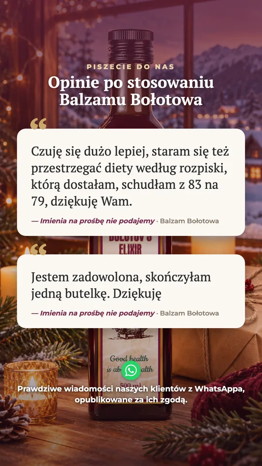
Wiadomości klientówPrzetłumaczone z języka słowackiegoSkrócono — pełna treść na obrazku
„Czuję się dużo lepiej, staram się też przestrzegać diety według rozpiski, którą dostałam, … dziękuję Wam.”
„Jestem zadowolona, skończyłam jedną butelkę. Dziękuję”

MilaPrzetłumaczone z języka słowackiegoSkrócono — pełna treść na obrazku
„… Uważam, że to dla mnie wspaniała pomoc. Serdeczne dzięki także za książkę, ucieszyłam się, i życzę Wam pięknego dnia.”
Polityka weryfikacji opinii: publikowane opinie pochodzą od osób, które dokonały zakupu. Nie publikujemy opinii fałszywych. Opinie mają charakter informacyjny, odzwierciedlają indywidualne doświadczenia klientów i nie stanowią obietnicy efektów zdrowotnych. Suplement diety nie jest lekiem.
Podziel się swoim doświadczeniem z produktami Centrum Bolotova.
Dołącz do tysięcy zadowolonych klientów w całej Europie.